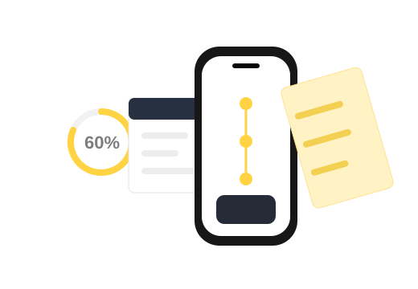

Service design · 8min read
Milestone Seed
A calm financial planning service that helps families understand, track, and prepare for major life transitions
- Type
- Service Design
- Timeline
- 2026
- Team
- Subin Jo
- Deliverables
- Journey Map
Service Blueprint
Interface Concept

Overview
Planning becomes easier when the next step is visible.
The Problem
Long-term financial planning can feel abstract and hard to act on.
Solution
A milestone-based experience that connects goals, timing, and action.
Research
Understanding moments when families need timely and clear guidance.
Ideation
Exploring ways to make recurring and one-time costs easier to compare.
Delivery
Service flow, dashboard concept, and planning touchpoints.
Reflection